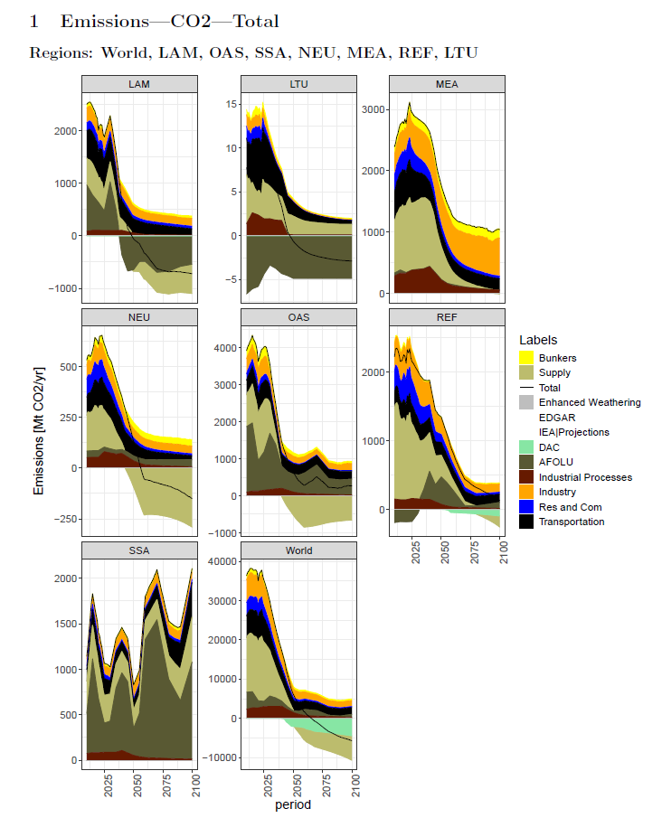
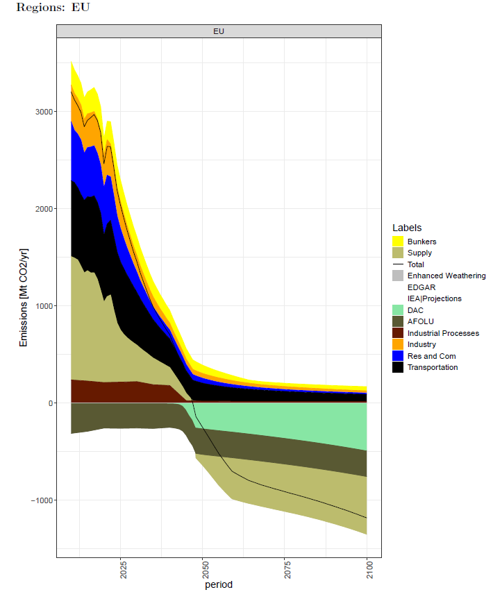
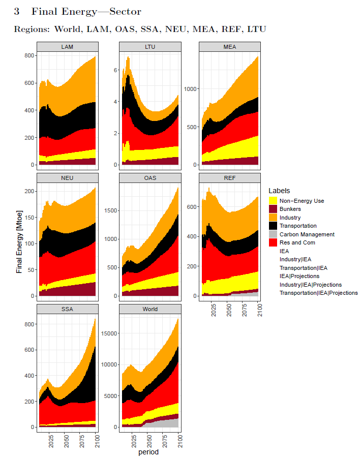
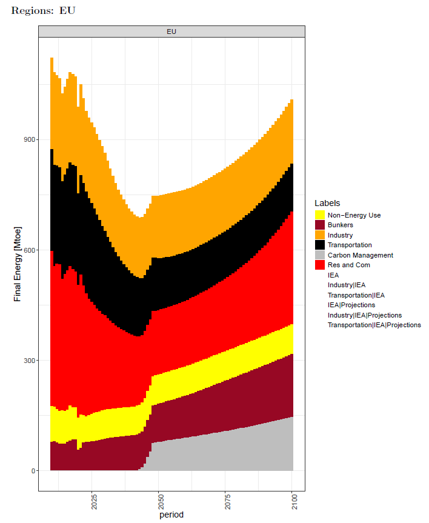
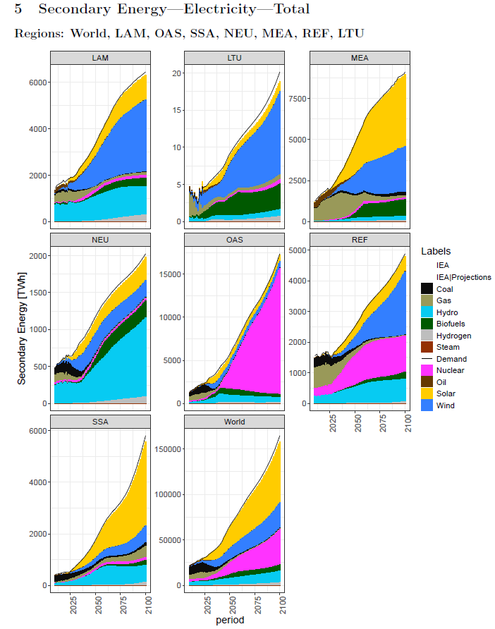
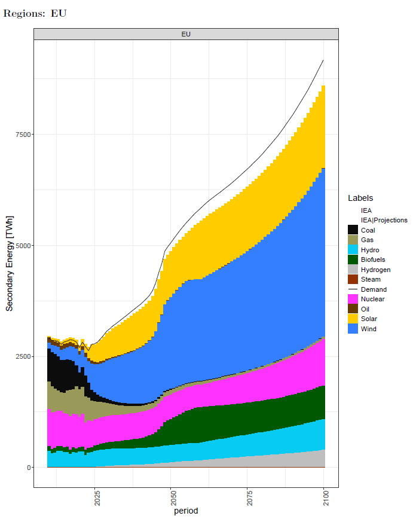

7. Baseline results
Note
In brief — This chapter presents indicative output from an OPEN-PROM NDC–LTS baseline run: CO₂ emissions, final energy demand, fuel shares and electrification, and electricity generation, each shown for the world and for the EU.
Important
These are illustrative results from one specific NDC–LTS baseline scenario, produced with one particular model version. They are shown to convey the kind of output OPEN-PROM produces, not as definitive projections. The exact numbers will change across model versions and scenarios.
For the baseline scenario an NDC–LTS run is presented.
An NDC–LTS scenario reflects a pathway that integrates a country’s short-to-medium-term climate commitments, as defined in its Nationally Determined Contribution (NDC), with its long-term decarbonisation objectives outlined in its Long-Term Strategy (LTS). Such a scenario typically incorporates the policy measures and emission-reduction targets committed up to 2030, and then extends these trajectories in a consistent manner towards mid-century climate goals, such as net-zero emissions. By linking these two policy horizons, the scenario provides a coherent representation of how near-term actions influence long-term outcomes.
7.1. Baseline emissions
The baseline emissions trajectory indicates a substantial reduction in CO₂ emissions across the EU (Fig. 7.2) and other economies (Fig. 7.1), with global emissions falling below zero. This pattern aligns with a scenario embedding NDC commitments.
{kind=link}

Fig. 7.1 NDC-LTS baseline: CO₂ emissions per sector (global).
{kind=link}

Fig. 7.2 NDC-LTS baseline: CO₂ emissions per sector, EU.
7.2. Final energy demand
Final energy demand by sector is reported for the world (Fig. 7.3) and for the EU (Fig. 7.4).
{kind=link}

Fig. 7.3 NDC-LTS baseline: final energy demand per sector (global).
{kind=link}

Fig. 7.4 NDC-LTS baseline: final energy demand per sector, EU.
{kind=link}
{kind=link}
7.4. Electricity generation and power-sector transformation
Electricity generation by fuel illustrates the power-sector transformation, reported for the world (Fig. 7.7) and for the EU (Fig. 7.8).
{kind=link}

Fig. 7.7 NDC-LTS baseline: electricity generation per fuel (global).
{kind=link}

Fig. 7.8 NDC-LTS baseline: electricity generation per fuel, EU.